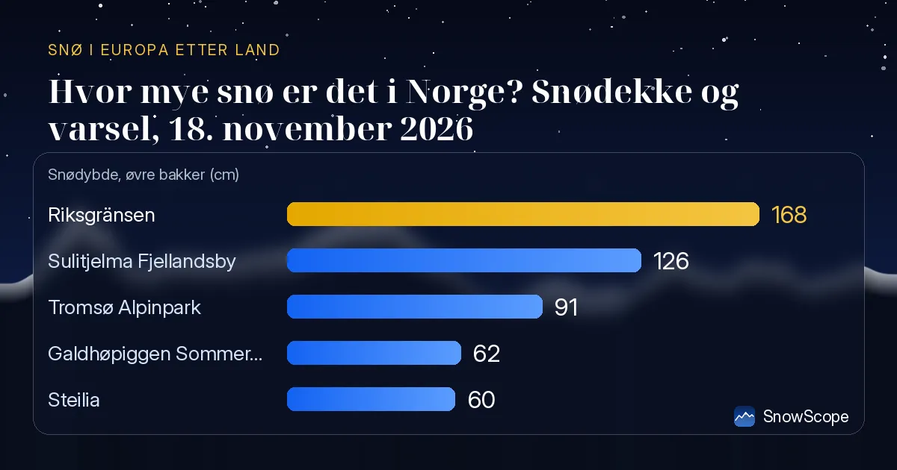

Hvor mye snø er det i Norge? Snødekke og varsel, 18. november 2026
Den 18. november har nesten ni av ti fjell i Norge snø, men Finlands hvite andel er bare litt over halvparten. Forskjellen i dybde er enda større: Norges beste skistед når 168 cm, mens Finlands dypeste punkt står ved 26 cm.
Se snøprognosen for Riksgränsen direkte i SnowScope-appenSnødybde, puddervarsler og 3D-kartet, gratis.
Hvor snøen ligger
Stormspor følger ikke grenselinjer. Nå ligger snøkanten klart til Norges fordel. De kartlagte fjellene og åsene som er hvite summerer seg til omtrent 249 960 km² over hele Norge – det er 89 % av landets høyfjell. Finland, rett over grensen, har bare 55 % av toppene og ryggene dekket.
I løpet av de siste 24 timene alene vant Norge 8 720 km² nytt hvitt område. For en uke siden var dekket omtrent 220 860 km², så vinteren fyller seg raskt.
| Country | White | Deepest resort | Next 7 days |
|---|---|---|---|
| Norway | 89 % | Riksgränsen | 38 cm |
| Sweden | 83 % | Björkliden | 15 cm |
| Finland | 55 % | Kallin | 13 cm |

Bildet fra stidene
Riksgränsen holder dypeste snø: 168 cm målt på øvre bakker. Nummer to er Sulitjelma Fjellandsby med 126 cm, deretter Tromsø Alpinpark med 91 cm. Galdhøpiggen Sommerskisenter og Steilia ligger på 62 cm og 60 cm. Av Norges 155 sporede skisteder har 142 snø på øvre bakker.
Finlands leder, Kallin, har bare 26 cm. Sveriges beste skistед, Björkliden, registrerer 140 cm – nærmere Norges topp enn Finlands.

Hva som kom de siste tre dagene
Lyngen-Alpene i Nord-Norge fikk mest: 18 cm på tre dager. Over hele landet falt minst 5 cm over et område på cirka 76 570 km². De siste 72 timene bragte topper på 15 cm i de snørikeste sonene.
Enkelte skisteder fikk variert tilskudd. Tromsø Alpinpark fikk 9 cm, Sulitjelma Fjellandsby fikk 6 cm, mens Riksgränsen fikk bare 1 cm. Mønsteret viser at stormene har vært spredt.
Dybde fra dalbunnen til høye topper
Snø legger seg dypere når du stiger. Mellom havnivå og 500 m er gjennomsnittet 8 cm og 80 % av grunnen er hvit. Ved 1 000 m når gjennomsnittet 24 cm med fullt dekke. Over 1 500 m finner du 29 til 41 cm, med hver bakke hvit.
Dette betyr noe for planleggingen: lavtliggende stier i begge land har fortsatt bare områder, men alt over 1 000 m i Norge er sammenhengende hvitt. Lavlandet i Finland er knapt berørt av denne sesongens snø.
Hva som kommer den neste uka
Opp til 29 cm er varslet for de neste tre dagene, med topp på lørdag 21. november med 15 cm mulig. Uken etter (26. november til 2. desember) legger til ytterligere 30 cm på de snørikeste stedene. Dette bør skyve balansen enda mer til Norges fordel, og begrave mer av steinene og gapene under.
Finland og Sverige vil se mindre tilskudd: opp til 13 cm og 15 cm henholdsvis over den neste uka.
Hvordan denne sesongen sammenlignes med tidligere
Riksgränsens 55 cm (målt ved 708 m) er litt lavere enn typiske 59 cm for midten av november. Sulitjelma Fjellandsby ligger på 49 cm mot normalt 52 cm. Ingen av skistEdene ligger foran sitt vanlige tempo. Galdhøpiggen Sommerskisenter, høyt ved 2 015 m, har bare 31 cm mot typisk 83 cm – den ligger godt etter.
Sesongen har startet bra, men ikke unormalt. Mye avhenger av hva som faller mellom nå og april, når disse dalene normalt sett ser sitt dypeste snø.
Tips til skiløpere
- Hold deg til høyfjellene i begge land: over 1 500 m i Norge er snøbasen solid; Finlands stier under 1 000 m er fortsatt risikable for steiner.
- Hvis du kan vente til etter 21. november, vil nysnø ha satt seg og veiene blir klarere.
- Tidlig sesongdekning betyr at steiner og greiner kan gjemme seg under tynne områder på lavere bakker – test forsiktig og bruk preparerte stier først.
- Vind i høyden kan pakke snøen hardt: forvent variabelt på ryggene og forvent myk snø i beskyttede søkk.
- Sjekk det lokale snøskredvarselet før du går av stien.
Om tallene
Snødybdene for skistedene er det dypeste snødekket i de øvre bakkene på datoen som vises; de er anslag for et område, ikke en måling i ett punkt. Prognoser kan endre seg. Les alltid det offisielle snøskredvarselet før du kjører utenfor preparert løype.
Siter denne rapporten
For forskning, undervisning eller presse: tallene og diagrammene kan brukes fritt under CC BY 4.0 med denne kildehenvisningen.
SnowScope (2026), Hvor mye snø er det i Norge? Snødekke og varsel, 18. november 2026, https://snowscope.app/blog/nb/2026/11/norway-snow-vs-neighbours-18-november-2026.html, hentet 2026-11-18
SnowScope (Atlas Labs). (2026, November 18). Hvor mye snø er det i Norge? Snødekke og varsel, 18. november 2026. SnowScope snow reports. https://snowscope.app/blog/nb/2026/11/norway-snow-vs-neighbours-18-november-2026.html
BibTeX
@misc{snowscope2026norwaysnowvsneighbours18,
author = {{SnowScope (Atlas Labs)}},
title = {Hvor mye snø er det i Norge? Snødekke og varsel, 18. november 2026},
year = {2026},
month = nov,
howpublished = {\url{https://snowscope.app/blog/nb/2026/11/norway-snow-vs-neighbours-18-november-2026.html}},
note = {Published 2026-11-18 12:11 UTC; accessed 2026-11-18}
}· CC BY 4.0 · Metoder, data og verktøy →
Riksgränsen: snø og temperatur etter høyde, i vinter sammenlignet med i fjor (verktøy) →
Følg Riksgränsen
Gratis: en melding når nysnø er på vei, og prognosen hver morgen.